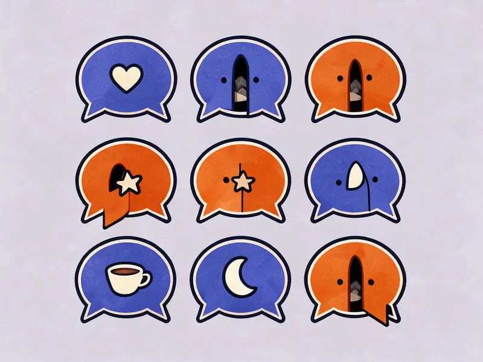
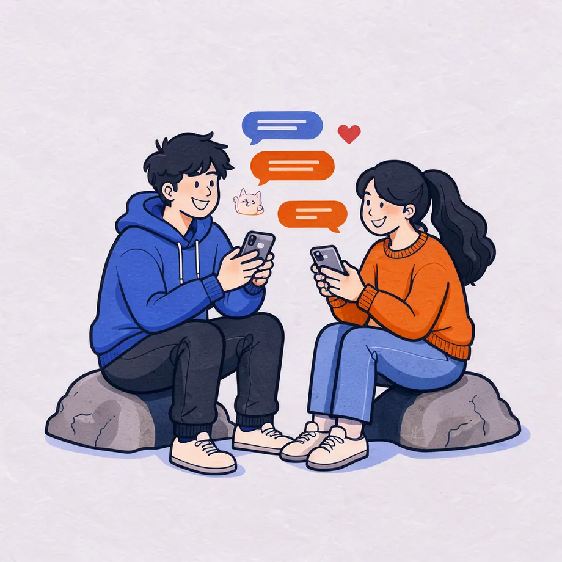
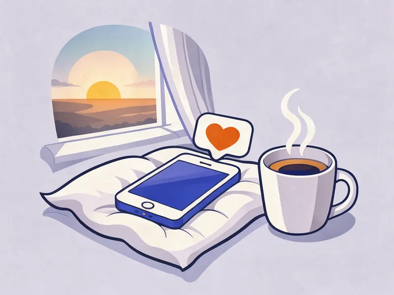
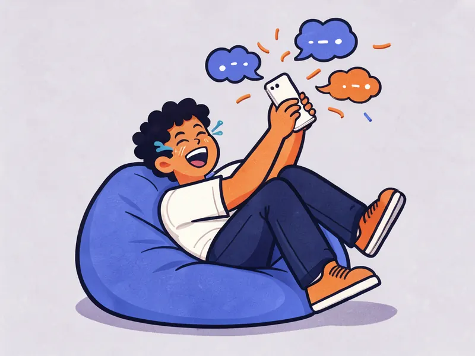
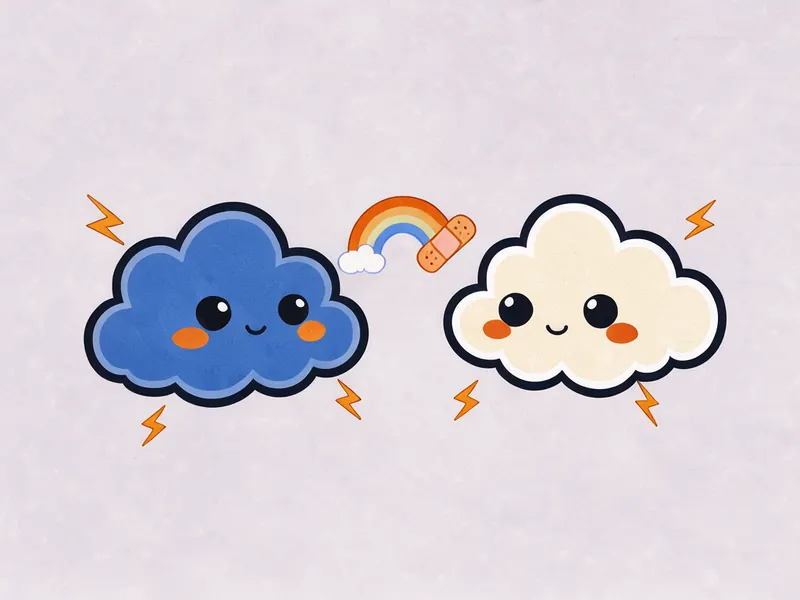
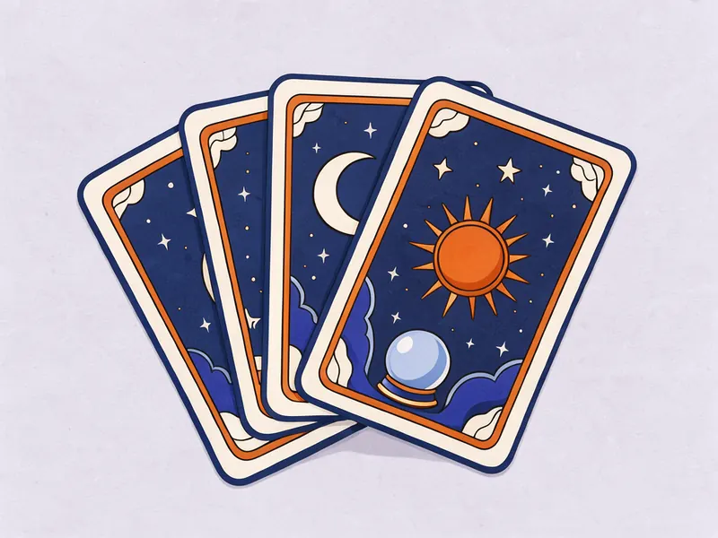
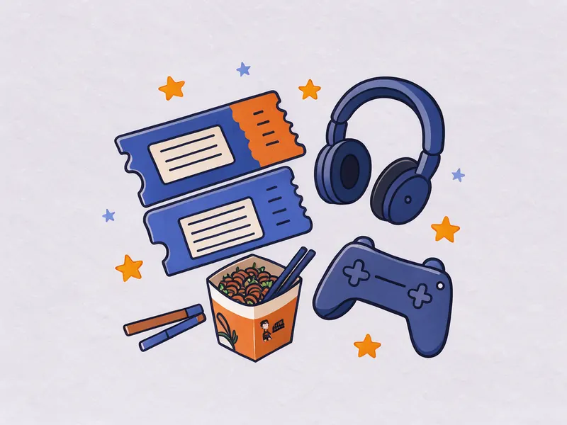
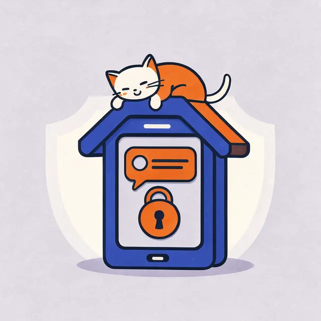

Календарь первых раз
Первое сообщение, первое «люблю», рекордный день и самая длинная серия без молчания.
Загрузите экспорт чата из Telegram и узнайте, кто пишет первым, когда вы нежнее всего, кто громче смеётся и как вы ссоритесь. Бесплатно и без регистрации.

Перетащите сюда папку экспорта
или файлы messages.html / result.json из неё
Цифры и графики считаются прямо в браузере. Переписка никуда не загружается.

Первое сообщение, первое «люблю», рекордный день и самая длинная серия без молчания.

День недели и время, когда в чате больше всего сердечек и тёплых слов.

Топ моментов, когда вы смеялись громче всего, вместе с перепиской вокруг.

Кто первым мирится, кто вспоминает прошлое. Каждый вывод подтверждён цитатой.

Три карты по мотивам переписки и правдивые сплетни, которые надо сорвать.

Билет на вечер, собранный из того, о чём вы мечтали в чате.
